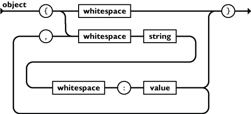

Comment choisir et utiliser un parser pour son DSL ?
Qui suis-je ?
- Benoît Lemoine
-
Développeur Fullstack
(TypeScript / Scala)
chez mnubo à Montréal - @benoit_lemoine

Qu'est qu'un DSL ?
- Domain Specific Language
- Language spécialisé pour un domaine applicatif
- Respecte une grammaire - régles permettant de valider si un énoncé est correct
- Par ex: SQL, markdown
Qu'est qu'un parser ?
String -> Concrete Syntax Tree
Parser vérifie uniquement la syntaxe et pas la sémantique
Example
1 + 2 * 3
CST
AST
AST - Json
['+', 1, ['*', 2, 3]]
Pourquoi ?
- Faire des formules à la excel
- Supporter un sous/sur ensemble d'un langage existant (e.g. JSON avec commentaires)
- Interface Utilisateur permettant de saisir des commandes (e.g. chat)
- Valider (et simplifier) un fichier de configuration
- Créer son propre langage de programmation
- etc.
Les solutions... discutables
evalet langages DSLables (ex. scala ou groovy)- Lié fortement à une plateforme
- Difficulté à valider les entrées
=>problémes de sécurité - Limitation des grammaires possibles
Machine Learning et NLP
1 + 2?2.987432avec une probabilité de 98%- L'imprécision sur la grammaire d'entrée entraîne une imprécision sur le résultat de sortie
hiérarchie de langage de Chomsky
Langage : ensemble de mots construits à partir d'un alphabet et respectant des régles de grammaire

Parser un langage régulier
Utiliser les expressions régulières - aka Regex
- Code Postaux au Canada
K1A 0B1ouH0H 0H0[A-CEGHJ-NP-TVXY][0-9][A-CEGHJ-NP-TVXY] [0-9][A-CEGHJ-NP-TVXY][0-9]
PAS DE REGEX POUR LES LANGAGES NON CONTEXTUEL
a mere glimpse of the world of regex parsers for HTML will instantly transport a programmer's consciousness into a world of ceaseless screaming,... HTML tags lea͠ki̧n͘g fr̶ǫm ̡yo͟ur eye͢s̸ ̛l̕ik͏e liquid pain, the song of re̸gular expression parsing will extinguish the voices of mortal man from the sphere I can see it can you see ̲͚̖͔̙î̩́t̲͎̩̱͔́̋̀ it is beautiful the final snuffing of the lies of Man ALL IS LOŚ͖̩͇̗̪̏̈́T ALL IS LOST the pon̷y he comes he c̶̮omes he comes the ichor permeates all MY FACE MY FACE ᵒh god no NO NOO̼OO NΘ stop the an*̶͑̾̾̅ͫ͏̙̤g͇̫͛͆̾ͫ̑͆l͖͉̗̩̳̟̍ͫͥͨe̠̅s ͎a̧͈͖r̽̾̈́͒͑e not rè̑ͧ̌aͨl̘̝̙̃ͤ͂̾̆ ZA̡͊͠͝LGΌ ISͮ̂҉̯͈͕̹̘̱ TO͇̹̺ͅƝ̴ȳ̳ TH̘Ë͖́̉ ͠P̯͍̭O̚N̐Y̡ H̸̡̪̯ͨ͊̽̅̾̎Ȩ̬̩̾͛ͪ̈́̀́͘ ̶̧̨̱̹̭̯ͧ̾ͬC̷̙̲̝͖ͭ̏ͥͮ͟Oͮ͏̮̪̝͍M̲̖͊̒ͪͩͬ̚̚͜Ȇ̴̟̟͙̞ͩ͌͝S̨̥̫͎̭ͯ̿̔̀ͅParser un langage non contextuel
- Parsing manuel
- Parser combinator
- Parser generator
- Parser exotiques...
Les points d'attention
- Performance
- La gestion des erreurs
- Transformation du CST en AST
- Facilité d'utilisation
- Maintenabilité
Example - Subset of JSON
["Peter", 12, [null, 14]]
Parser manuel
-
+Meilleurs performances (si on fait l'effort) -Non portable-
-Le moins maintenable (même si on fait l'effort)
Parser combinator
- Combinator = function prenant plusieurs parsers en entrée et renvoyant un parser en sortie
- On construit donc le parser du langage en combinant des parsers plus simples
Parsimmon
const __ = P.optWhitespace;
const Null = P.string('null').result(null);
const String = P.regexp(/"([^\0-\x1F\x22\x5C]*)"/, 1);
const Number = P.regexp(/-?[1-9]*[0-9]+(\.[0-9]+)?/)
.map((str) => parseFloat(str));
const Array = P.sepBy(P.lazy(() => Json),
P.string(',').trim(__))
.wrap(P.string('[').skip(__),
__.then(P.string(']')));
const Json = P.alt(Null, Number, String, Array).wrap(__, __);
Parser combinator
-
+Bonne maintenabilité, en particulier si on connait la programmation fonctionnelle +Pas d'étape de build intermédiaire+"Facile" à debugger-Mauvaises performances-Non portable
Parser generator
- Grammaire dans un DSL
- Génère un parser à partir de la grammaire
- Peut nécessiter ou non un runtime
Étape intermediaire du lexer
- String -> List[Token] -> CST
-
'["name", 12]' -> [LEFT_SQUARE_BRACKET, STRING("name"), COMMA, NUMBER(12), RIGHT_SQUARE_BRACKET]
Backus Naur Form aka BNF
EBNF, ABNF (RFC 5234), etc.
begin-array = ws %x5B ws ; [ left square bracket
end-array = ws %x5D ws ; ] right square bracket
value-separator = ws %x2C ws ; , comma
quotation-mark = %x22 ; "
ws = *(%x20) ; space
null = %x6e.75.6c.6c ; null
value = null / array / string
string = quotation-mark *char quotation-mark
array = begin-array [
value *( value-separator value )
] end-array
Left recursion
1 + 20 + 34
expression = expression + number \ number
number = 1*DIGIT
Ambiguïtés
stmt = "true" \ "false" \ if-expression
if-expression = "if" stmt "then" stmt \
"if" stmt "then" stmt "else" stmt
if true then if false then true else false
Error handling
- dans le parser S'arrete a la premiere erreur ou pas ? - dans le generator?CST -> AST
- Visitor - langage agnostique
- Actions intégrées - plus proche de la grammaire
Famille de grammaire/algo
- LL(1), LL(k), LL(*)
- LR(1), LR(k) SLR(1), LALR(1)
- Peg
- Earley
On s'en moque
Example: Nearley
Earley pour JavaScript, actions intégrées.
Example: ANTLR
LL(*), visitor
Quelques features a regarder
- Représentation sous forme de rails 
- Outillage de debug/test
- Génération de chaine valide
Conclusion - avez vous besoin d'un parser
- Si vous avez déjà un parser composé de pleins de regex
- Si vous vous appretez a présenter un format texte au end user (par ex liste de course)
Conclusion - quel parser choisir
- Tester les !
- Si simple et performance ne compte pas, parser combinator
- Si moins simple ou que les perfs sont importantes, parser generator
- Se focaliser sur la maintenabilité
Famille de grammaire
Si vous voulez vraiment savoir
- LR et Earley et PEG supporte la récursion a gauche*
- LR et Earley sans ambiguités
- Earley > LR > LL en terme de langages pouvant être parsé